Construtores da liberdade
comunidades, lutas e identidades negras no Brasil do século XIX
2021-10-13
Carnaval, Política e Liberdade
Experiências Negras e a Abolição da Escravidão no Rio de Janeiro (1879-1888)
Quadro commemorativo offerecido às Sociedades Carnavalescas Tenentes do Diabo, Democráticos e FenianosAngelo Agostini, Revista Illustrada, 1881, edição 241, pp.4-5
O tema: percursos, dilemas, perguntas
A pesquisa ontem, hoje e amanhã.
História Digital?
Que carnaval é esse?
a festa carnavalesca como um problema histórico
História social da cultura: sujeitos, experiências, conflitos sociais a partir de práticas e performances culturais
Objetivos e recorte
Analisar as conflitos em torno dos conceitos e práticas do Carnaval e da Liberdade na última década de vigência do regime escravista brasileiro (1879 e 1888) na cidade do Rio de Janeiro.
Principais fontes
- Periódicos: Gazeta de Notícias (1879-1888), Jornal do Comércio (1879-1888), Gazeta da Tarde (1882-1888, a partir da direção de José do Patrocínio);
- Revista Ilustrada (1878-1888)
- Livros de matrícula da Casa de Detenção da Corte
- Atas da Câmara Municipal, códices sobre Carnaval e Entrudo, Posturas e Editais, Infração de Posturas e os Códigos de Posturas Municipais de 1854 e 1893
- Folcloristas e Memorialistas
Estrutura da aula:
Páginas Carnavalescas:
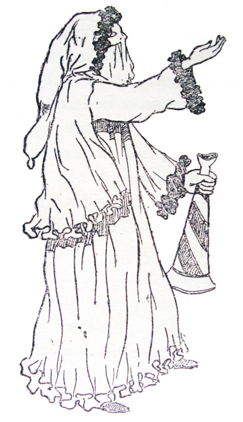jornalistas e intelectuais e o olhar sobre a festa e a nação
No alto de uma montanha alguns pretinhos, cantavam um hino à liberdade, acompanhado de um batuque característico. Quando eles iam mais elevados, dois vultos que estavam no sopé da montanha, e que se celebrizaram pelas suas opiniões escravocratas, avançavam, furiosamente, com o fim de se apoderarem das peças. Mas no momento em que tocavam o alto da montanha, surgiam-lhes face a face inopinadamente, as figuras de Joaquim Nabuco e de José do Patrocínio, obrigando-os a descer, espavoridos.
Revista Illustrada. Ano 11 – nº429 – 20 de março de 1886. P6 – Biblioteca Nacional."Olhai: sobe a montanha um grupo de proscritos
Rufando, a batucar, ao som de agudos gritos,
Procurando abrandar da vida amargos travos,
Deixando por um momento o seu viver de escravos.
Porém, fatalidade! Os belzebus da terra, ai
Armadores de grilhões, lá vão galgando a serra
E escutam já de perto o canto da desgraça
Que a dois mil anos sai do peito de uma raça!
[...]
"Pois bem! Vós que aplaudis com palmas e com flores
As sátiras alegres, deixai que esses horrores,
Deixai que a corrupção, deixai que todo mal
Espume à vergastada, em nosso carnaval,
E os sons ouçam-se bem do canto da desgraça
Que a dois mil anos sai do peito de uma raça!"
Entrudo
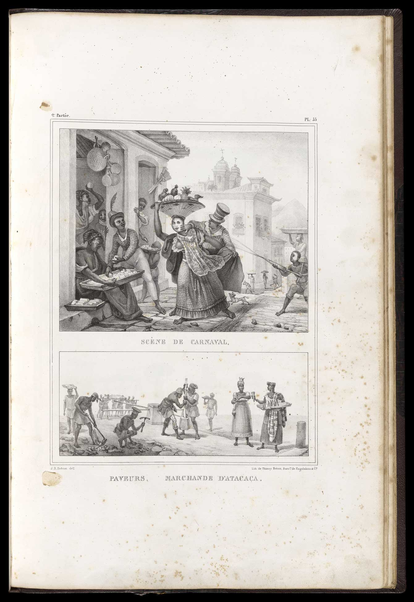Debret. Scéne de Carnaval, 1835
"Civilizar" o carnaval e a nação
Que Progresso?
Que Nação?
Que Liberdade?
Projetos pedagógicos através do carnaval
Abolicionismo tutelado e legalista
Aproximação entre imprensa abolicionista e Grandes sociedades carnavalescas
Jornal do Commércio, vc não!
Mas qual o lugar do escravizado, do liberto, do negro livre nesse processo?
passivo, tutelado, sem romper a ordem social.
Repressão e racialização:

imprensa e polícia
Prisões nos jornais
A construção das ruas "incivilizadas"
O povo X as famílias
Quem então é o povo?
“O Zé Povinho quase só tem uma manifestação no carnaval: o diabinho encarnado.”
Gazeta de Notícias, 4/02/1883Na rua Primeiro de Março na frente de um Zé Pereira, recebeu diversos ferimentos o crioulo Quintino José Gonçalves de Souza, sendo preso o autor da ofensa, que era o diabo, crioulo João de Souza.
Gazeta de Notícias, 04/02/1883.Agressões e ferimentos – um preto de nome João de Souza, fantasiado de diabinho e fazendo parte de um Zé-Pereira, ao passar anteontem às 9 ½ horas da noite pela rua Primeiro de Março, próximo da do Hospício, deu diversas navalhadas em outro preto de nome Quintino José Gonçalves, pelo que foi preso por dois soldados do batalhão de engenheiros.
Jornal do Commércio, 04/02/1883Quando a cor aparece no jornal?
77% em relatos de eventos violentos e conflituosos (como crimes, agressões, brigas)
13% em representações em carros de idéias das Grandes Sociedades Carnavalescas, alguns fantasiados e integrantes de Cucumbis
os jornalistas cariocas evitam racializar as suas críticas às práticas e formas do carnaval das ruas, mantendo seus argumentos no campo da cultura, ressaltando a “incivilização” e a “barbárie” do “povo”, do “Zé-Povinho”, por falta de acesso aos bens culturais trazidos pelo progresso – representados no carnaval pelas Grandes Sociedades Carnavalescas de inspiração europeia.
Jornal do Commercio
28 registros durante o carnaval com a racialização dos sujeitos: 23 eram pretos (seis escravos), dois pardos (um escravo), um mulato e dois crioulos. Todos estavam envolvidos em algum tipo de ação violenta.
Gazeta da Tarde
6 ocasiões onde utiliza referências à cor. Dentre eles nenhum escravizado, dois pretos, um pardo e três negros. Apenas um tratava de agressão física.
Prisões nas fontes da Casa de Detenção
Arquivo Público do Estado do Rio de JaneiroPresos no Carnaval - cor
Brasileiros presos no Carnaval - cor
Repressão racializada, intensificada nos dias de carnaval.
PQ???
Ação política e as disputas pelos sentidos da liberdade
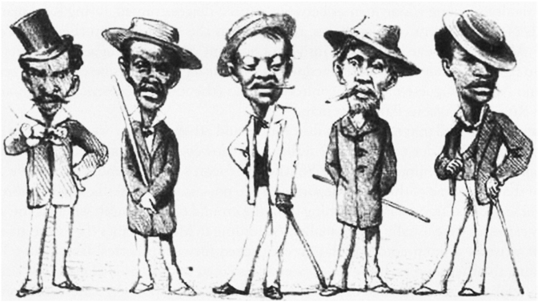Diabinhos e Cucumbis Carnavalescos
Diabinhos Encarnados
Qual a imagem que intelectuais, jornalistas e autoridades policiais faziam destes foliões endiabrados? E por que, apesar de existirem tantas outras fantasias e de brancos e morenos também se fantasiarem de diabos e diabinhos, esta fantasia foi associada à imagem de pretos, pardos, fulas, crioulos e escravos? Quais as experiências dos diabinhos nas ruas do Rio às vésperas da abolição?
Você me conhece?
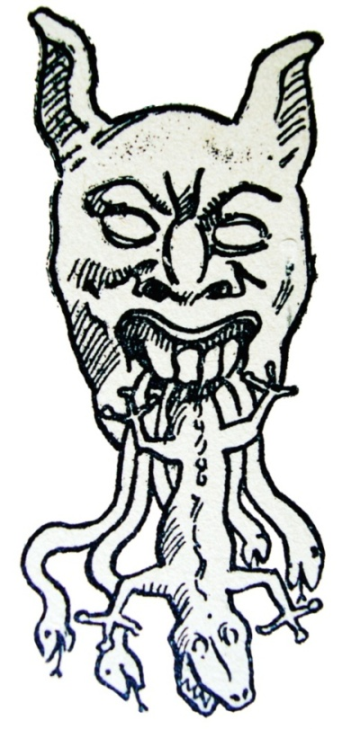Calúnia, ofensas, pilhéria
Diabo Europeu?
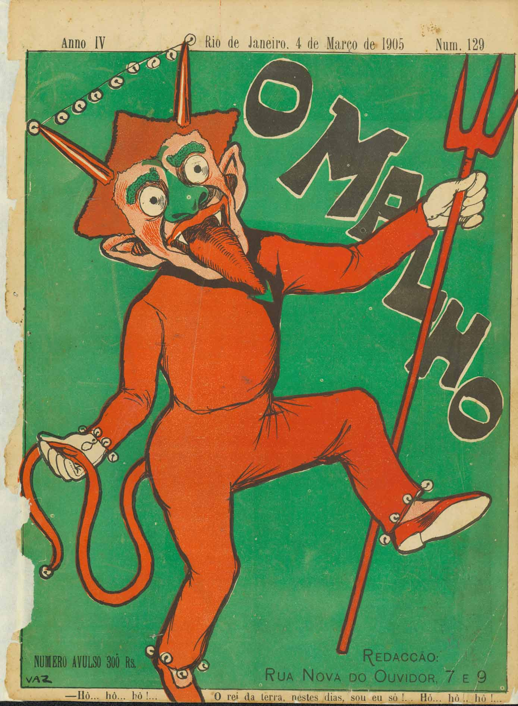Tradições, conflitos e sentidos da fantasia.
Classes Perigosas e Diabólicas e a política da “suspeição generalizada”.
"os mascarados que frequentavam as ruas desde séculos atrás, associados às ocasiões festivas, apareciam então colados à noção de crime e de violência" (CUNHA, 2002, p.30)
Intensificação da racialização das relações sociais que ganha força justamente nesse período e irá atingir seu auge nas primeiras décadas da República
Anonimato diabólico X políticas de controle social
Adjetivos racializados na imprensa
Associação com crimes e atos violentos
Associação com capoeira e cacetes
Revista Illustrada, 31/01/18881
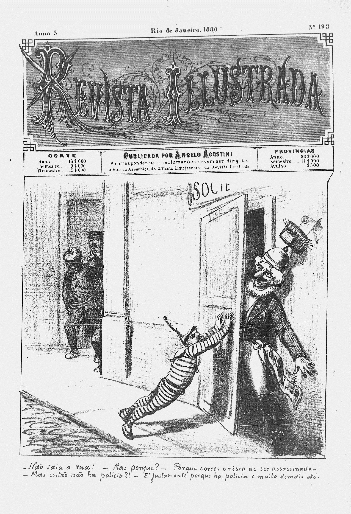Os diabos, isto é os capoeiras por essa forma fantasiados...

Gazeta de Notícias. 07/02/1883. P1
Décadas de 1870 e 1880
Politização da capoeira na Corte
Avanço dos abolicionismos
Carnaval se torna a festa principal da cidade
Empenho da imprensa em associar a imagem dos capoeiras com o diabo, e mais do que isso atrelar a fantasia de diabinho à prática da capoeiragem, da violência e da desordem
13th, Netflix
A última abolição
A batalha pela festa e os escravizados no carnaval
Um dos elementos das lutas por autonomia e liberdade
Comércio urbano no carnaval: a busca por pecúlio
Exercícios de capoeiragem – a polícia prendeu anteontem os seguintes indivíduos encontrados em exercícios de capoeiragem na frente de diversos grupos carnavalescos: Tito, escravo de Antonio Nunes pereira; Celestino, [escravo] de João de Tal; Lourenço, [escravo] de Fuão Carneiro; Leopoldino, [escravo] de Fuão Fontainha; José Mendes Ferreira, Manoel da Silva, Antonio Pereira dos Santos, José Martins de Gusmão e João Afonso da Silva.
“Aniceto, escravo de Antonio José Machado, foi encontrado fantasiado, em luta corporal com um indivíduo que evadiu-se, na rua do Riachuelo. Aniceto apresentava três leves ferimentos na cabeça e foi recolhido ao hospital da Misericórdia.”
Por estarem em exercício de capoeiragem, na frente da música do 7º batalhão de infantaria, e agredirem os guardas urbanos, armados com cacetes, quando a mesma música passava pelo largo da Misericórdia, foram presos os seguintes desordeiros: Ignacio, escravo de Antônio Joaquim de Mattos, Antônio Carolino da Conceição, Perrere Antônio, João, escravo de Ricardo de tal, Antônio Leandro da Silva e José Alves dos Santos.
Conexões afro-americanas
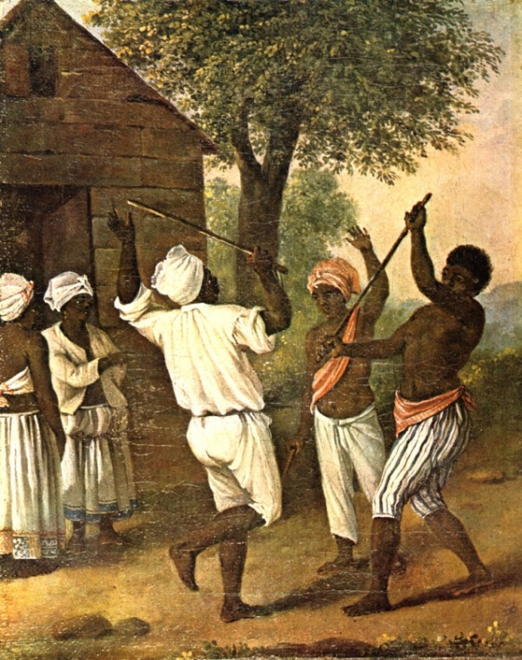A Cudgelling Match between English and French Negroes in the Island of Dominica
Conexões afro-americanas
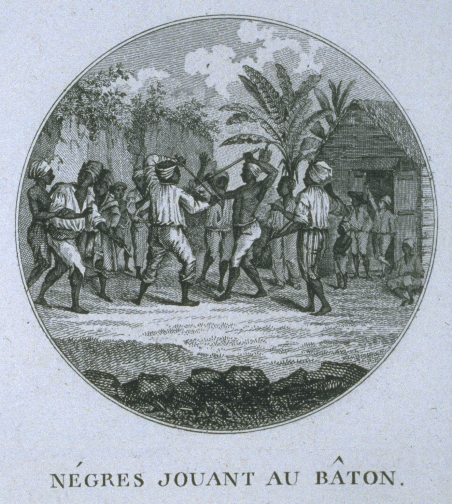Stick Fighting, Saint Domingue, late 18th cent.
Conexões afro-americanas
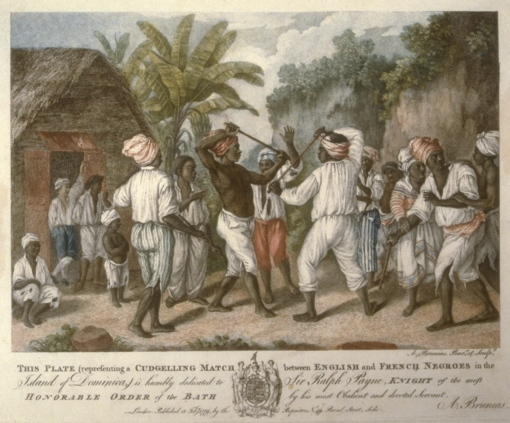Stick Fighting, Dominica, West Indies, 1779
Conexões afro-americanas

Plantation Dance, South Carolina, ca. 1785-1795
Versos e Cacetes: O jogo do pau na cultura afro-fluminense
Canboulay Riots Re-Enactment Trinidad Carnival 2003

O Mequetrefe, 10/03/1886, capa
Cucumbis Carnavalescos
Relatos de memorialistas e folcloristas
O Cucumbi do passado colonial
A influência de Mello Moraes Filho
“Sou rei do Congo, quero brincar”
Os Cucumbis carnavalescos seguem, em plena década de 1880, a utilizar essa festa como lugar de memória, onde recontam histórias da África e reforçam uma identidade. Mas que África?
“Quenguerê, oia congo do má;
Gira Calunga,
Manú quem vem lá.”
“Zumbi, Zumbi, oia Zumbi!
Oia Mamêto muchicongo.
Oia papêto.”
Do “Congo” à Rua do Ouvidor
"À tarde passaram os Cucumbis pela Rua do Ouvidor, parando em frente as redações dos jornais, onde executaram umas danças cheias de circunstâncias e comprimentos a uma dama que vinha vestida de rainha e a um homem com umas barbas muito grandes e muito pretas, que devia ser o rei".
Gazeta de Notícias. 09/03/1886Iniciadora Cucumbi
Antes da passagem das grandes sociedades, mais uma vez a Iniciadora Cucumbi cumprimentou
as redações dos jornais dançando e cantando, agitando a pluma de seus cocares, estando todos
os sócios rica, luxuosamente mesmo fantasiados. [...] demoraram-se por longo espaço de tempo,
dando vivas a José do Patrocínio e a seus companheiros de trabalho.
A sua passagem, como a dos Democráticos, saudaram-na gentis senhoras, que, das vossas janelas,
deixavam cair sobre eles chuva de ouro e pétalas de rosas.
Desfilaram pela rua do Ouvidor: (...) os Cucumbis Africanos, que, vestidos como nos países africanos, saudaram a imprensa e o Imperador do Brasil, entoando nessa ocasião cânticos originais, ao som de instrumentos não menos originais, parando de vez em quando para fazer prolongadas reverências, dando o mote da cantiga: A África sempre foi livre
Jornal do commercio. 14/02/1888Conexões afro-americanas
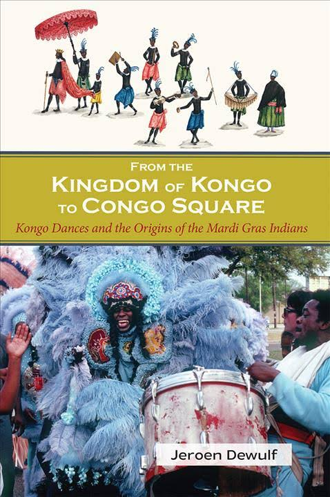Jeroen Dewulf. From Kingdom of Kongo to Congo Square, 2017
Como conquistam o espaço público?
Abolicionismo como lutar popular
Intensificação nas disputas em torno das visões de liberdade entre os diferentes grupos sociais da cidade.
África positivada: uma elaboração criativa de seus participantes estabelecendo um diálogo entre as novas formas de se brincar o carnaval da década de 1880 com os elementos culturais presentes entre as culturas negras da cidade.
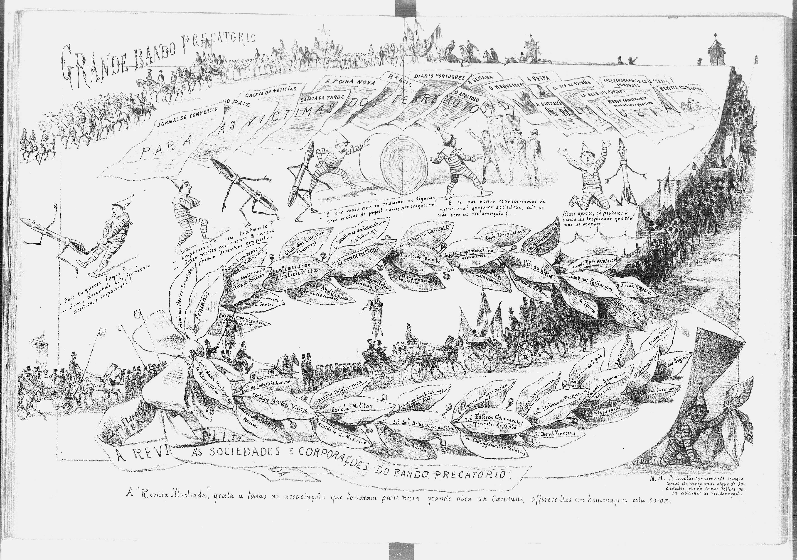
Revista Illustrada, 28/02/1885
De volta ao princípio:
as fontes, os métodos e a tecnologia
O que seria diferente?
Hemeroteca Digital Brasileira, Biblioteca Nacional
Busca nominal;
Ampliação de recorte;
Retomar as fontes.
Limites: leitura fragmentada? dependência do OCR?
Livros da Casa de Detenção, APERJ
Ampliação de análises quantitativas;
Raspagem e análise com programação;
Limite de acesso e a questão do HTR
E o Pós-Abolição?
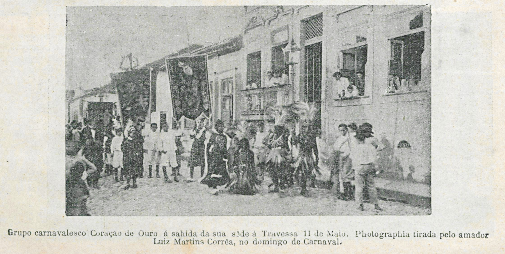República, cidadania e lutas antirracistas.
Link da imagem
Associativismo negro

Triunpho da Camélia - revista da semana 1911 ed. 00564 p. 21
Cidadania antirracista

Moyses Zacharias - Revista da Semana 1906 ed. 00305 p. 20
Banco de dados Sociedades Carnavalescas on-line
Contatos
Apresentação feita a partir do Reveal.js